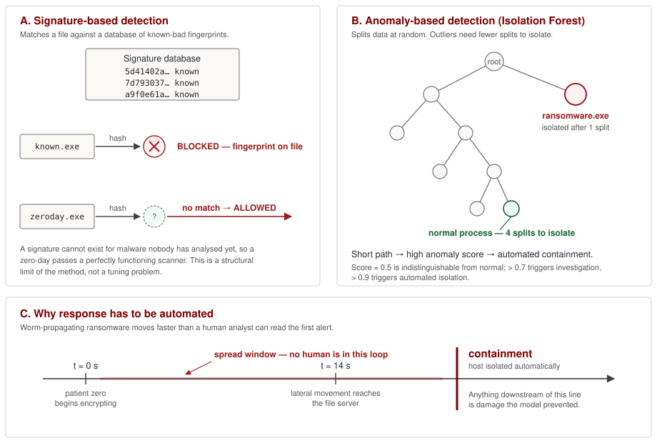

Topic 1.5
Leveraging AI in Cyber Defense
Chapter Contents
AP Cybersecurity Alignment
Unit 1: Introduction to Security · Topic 1.5, Leveraging AI in Cyber Defense
- 1.5.A Mitigate Risk
Describe the ways defenders put machine-learning systems to work on protective tasks: auditing firewall rules and access-control lists for weaknesses, reading application source for exploitable patterns, and drafting candidate detection rules, with the standing condition that a qualified engineer reviews every machine-generated recommendation before it reaches production. - 1.5.B Detect Attacks
Account for how statistical models let a security team triage an event volume no group of humans could read, separate probable attacks from ordinary activity, route the survivors to an analyst or to an automated action, and shorten the interval between compromise and containment enough to limit the damage.
Objective codes follow the AP Cybersecurity Course Framework (College Board, AP Career Kickstart). Objectives are paraphrased here, not quoted.
I. Defending at Machine Speed

Modern cybersecurity threats propagate at network speeds, rendering traditional human-centric incident response loops ineffective. When zero-day malwareZero-Day Exploit / MalwareAn attack exploiting a vulnerability that is unknown to (or unpatched by) the software vendor, "zero days" since the patch was issued (because no patch exists). Zero-day exploits are extremely valuable: they work on fully patched, up-to-date systems. Traded on dark markets for $100K-$2.5M (NSO Group Pegasus iOS zero-days). WannaCry used EternalBlue, an NSA-developed zero-day for Windows SMBv1. CVE (Common Vulnerabilities and Exposures) system: vulnerabilities get CVE IDs once disclosed. Before disclosure: zero-day. After: published CVE. MITRE ATT&CK categorizes by technique, not by zero-day status. Major zero-day brokers: Zerodium, Vupen, NSO Group (state intelligence). Signature databases cannot block zero-days because no signature exists until after analysis. or autonomous ransomwareAutonomous Ransomware (Worm-Propagating)Ransomware that spreads automatically through networks without requiring user clicks, like WannaCry (SMBv1 exploit) and NotPetya. Unlike traditional ransomware (requires a phishing click to spread), worm-propagating ransomware can encrypt an entire 10,000-node network in minutes with no user interaction. This is why human-speed incident response fails: by the time a human analyst sees the first alert, thousands of machines are already encrypted. WannaCry 2017: infected 200,000 machines in 150 countries in 24 hours. NotPetya 2017: caused $10B in damages, fully encrypted Maersk's 45,000-node network in ~7 minutes. Speed is the key: AI-based behavioral detection and automated isolation must respond in seconds, not minutes. payloads compromise an enterprise endpoint, lateral movement and data encryption can occur in seconds. To defend networks against these automated threats, organizations deploy anomaly-based behavioral profilingAnomaly-Based Detection vs Signature-BasedTwo fundamentally different philosophies. Signature-based: maintains a database of known-bad patterns (like an antivirus). If incoming code/traffic matches a known signature: block. Fast, low false-positive, but blind to novel attacks. Anomaly-based: models what "normal" looks like, then flags deviations. Catches novel attacks, zero-days, insider threats. Trade-off: higher false positive rate (legitimate admin activity can look "anomalous"). AI/ML models used: Isolation Forest (unsupervised), LSTM (time-series behavioral modeling), Autoencoders (reconstruction error = anomaly score), Graph Neural Networks (for lateral movement detection in Active Directory). UEBA (User and Entity Behavior Analytics), Splunk, Microsoft Sentinel, CrowdStrike, all use anomaly models as a core detection layer. models and automated containment protocols.
Traditional Endpoint Detection and Response (EDR)EDR, Endpoint Detection and ResponseSecurity software installed on each endpoint (laptop, server, workstation) that monitors process execution, file system changes, network connections, and registry modifications in real time, storing telemetry for threat hunting and automated response. Unlike antivirus (detect and quarantine), EDR provides: visibility (full process tree), detection (behavioral rules + ML models), response (automated isolation, process kill). Major EDR vendors: CrowdStrike Falcon (uses ML behavioral models), Microsoft Defender for Endpoint, SentinelOne (uses autonomous AI for response), Carbon Black (VMware). EDR vs XDR: XDR (Extended Detection and Response) integrates EDR with network, email, cloud, correlating signals across all attack surfaces. Gartner Peer Insights: CrowdStrike and Microsoft are top-rated as of 2024. tools rely on signature-based detectionSignature-Based DetectionThe traditional antivirus approach: every known piece of malware has a unique byte pattern (signature), like a fingerprint. The scanner computes hash or byte-pattern matches against a database of millions of known malware fingerprints. Fast, highly accurate for known threats, zero false positives on known-clean files. Catastrophically blind to new malware: WannaCry had no signature until 24 hours after the outbreak started, by which time 200,000 machines were encrypted. Signature update cycle: AV vendors analyze malware samples, extract signatures, push updates. Attackers counter with: polymorphic malware (changes code signature on each infection), metamorphic malware (rewrites its own logic), packing/obfuscation (wraps malware in encrypted shell). This is why signature-only defenses are insufficient for advanced threats.. While highly effective for blocking known threats, signature-based tools fail against zero-day exploitsWhy Signatures Fail for Zero-DaysA signature is a fingerprint of known malware. Zero-day malware is, by definition, previously unknown, no fingerprint exists in any database. Even PERFECT signature scanning cannot catch a zero-day. The only defenses that work: behavioral anomaly detection (flag the malicious BEHAVIOR rather than the malware's identity), sandboxing (execute suspicious code in isolation and observe what it does), and micro-segmentation (limit damage even when a zero-day succeeds). Historical zero-day examples: Stuxnet (2010), exploited FOUR Windows zero-days simultaneously. EternalBlue (2017), NSA-developed, leaked by Shadow Brokers, weaponized by WannaCry. Log4Shell (2021), Java logging library CVE-2021-44228, exploitable by a single log message. Shadow Brokers dump (2017) contained 20+ NSA zero-days., which do not have published signatures. Anomaly-based detection systems address this limitation by establishing a statistical baseline of normal network and system behavior. Figure 1.5.1 sets the two philosophies side by side: panel A shows the signature scanner passing an unknown binary because no fingerprint matches; panel B shows the same binary isolated after a single random split because its behaviour is nothing like the baseline; panel C shows why the resulting alert is worthless unless something acts on it within seconds.
That last clause carries the weight of this chapter. A detector that finds attacks is not the same thing as a detection programme that works, and the gap between them is arithmetic rather than engineering. Section II derives the gap explicitly: at the event volumes a real enterprise generates, a classifier can be right 99 percent of the time and still bury an analyst team, because the quantity that governs an analyst's day is not accuracy but precision, and precision collapses when the thing being hunted is rare. Everything else in the chapter, threshold selection, alert triage, the decision to let software isolate a host without asking, follows from that one calculation.
II. Anomaly Detection, Base Rates, and Automated Containment
1. Anomaly-Based Behavioral Profiling Models
Anomaly detection systems monitor multi-dimensional event streams (e.g., CPU utilization, file modification frequency, network connection count, and active processes) and apply classification algorithms to identify threats:
Statistical Anomaly Detection (Z-ScoreZ-Score (Standard Score)A statistical measure expressing how many standard deviations a data point is from the mean of its distribution. Formula: z = (x - μ) / σ. In security: if your server normally makes 50 outbound connections/hour (μ=50, σ=8), and suddenly makes 3,000 (z = (3000-50)/8 = 368), that's a 368-sigma event, statistically impossible under normal operation. Flag immediately. Z-score for anomaly detection is the simplest approach, works for 1D metrics. Limitations: assumes Gaussian distribution (many security metrics are not Gaussian); cannot detect multi-dimensional anomalies (e.g., "normal CPU + abnormal file writes + unusual network destination" simultaneously). For multi-dimensional: use Isolation Forest, Autoencoder, or DBSCAN clustering.)
A simple anomaly detection metric calculates the Z-score of event volumes. If an event volume $x$ deviates from the historical mean $\mu$ by more than a threshold factor of the standard deviation $\sigma$, an alert is triggered: $$z = \frac{x - \mu}{\sigma}$$ If $|z| > 3$, the event volume represents a statistically significant anomaly (representing less than 0.27% probability of being normal), indicating potential network scanning or data exfiltration.
Unsupervised Machine Learning: Isolation ForestsIsolation Forest (Liu, Ting, Zhou, 2008)An unsupervised anomaly detection algorithm that isolates outliers by randomly splitting data. Key insight: anomalous points are rare and "different", they can be isolated with very few random splits. Normal points require many splits. Think of sorting playing cards: the Joker (anomaly) is easy to isolate by random rules; an Ace (normal) blends in and requires many more splits to separate. Liu, F.T., Ting, K.M., Zhou, Z.H. (2008). Isolation Forest. IEEE ICDM. Implementation: sklearn.ensemble.IsolationForest. Time complexity: O(n log n) for training. Memory: O(1) per tree (subsampled). Excellent for high-dimensional streaming security logs. Used by: CrowdStrike Falcon (behavioral AI), AWS GuardDuty (network anomaly), Datadog (application anomaly). contamination parameter: expected fraction of anomalies in the training data (typical: 0.01-0.1%).
To identify multi-dimensional anomalies (such as a system executing an unusual sequence of API calls), systems deploy Isolation Forests. The algorithm isolates anomalous data points by recursively partitioning the feature space. Because anomalies are sparse and differ from normal data, they require fewer partitions (shorter path lengthsPath Length in Isolation ForestThe number of random splits (edges in the tree) required to isolate a single data point. A normal data point (surrounded by many similar points) requires many splits to be alone, long path. An anomalous data point (sparse, in an unusual region) is quickly isolated, short path. Average path length across many trees → anomaly score. Short path = high anomaly score = suspicious. Intuition: imagine dividing a country into regions by randomly drawing lines. A city (dense, normal data) requires many lines before it's the only city in its region. A remote hermit's cabin (anomalous, sparse) is quickly isolated in its own region with just 1-2 lines. The Isolation Forest uses this geometric intuition to score anomalies without needing to model "normal" behavior explicitly.) to isolate. The anomaly score $s(x, n)$ for a sample $x$ over a dataset of size $n$ is: $$s(x, n) = 2^{-\frac{\mathbb{E}(h(x))}{c(n)}}$$ Where:
- $h(x)$ is the path length of $x$ in a decision tree.
- $\mathbb{E}(h(x))$ is the average path length across a collection of isolation trees.
- $c(n)$ is the normalization constant, average path length in a Binary Search Tree on $n$ nodes: $$c(n) = 2 \ln(n - 1) + 0.5772156649 - \frac{2(n - 1)}{n}$$
Why random splitting works, and what the normalisation buys
The mechanism deserves more than the metaphor. Each isolation tree is grown by repeating one step: pick a feature uniformly at random, pick a split value uniformly at random between that feature's observed minimum and maximum in the current node, and recurse. Nothing about this procedure knows which points are anomalous. What makes it work is a geometric accident. The probability that a randomly drawn split separates a given point from its neighbours is proportional to the width of the empty interval surrounding that point along the chosen axis. A host whose outbound connection count sits in a dense cluster with a hundred similar hosts has almost no empty interval around it, so almost every split leaves it grouped with others and the recursion continues. A host making three thousand connections when the rest of the fleet makes fifty has an enormous empty interval below it, so a large fraction of possible split values isolate it on the first attempt. Rarity and extremity both shorten the path, and the algorithm exploits them without ever fitting a model of "normal".
The raw path length $h(x)$ is not comparable across datasets, because a bigger sample simply makes every tree deeper. The normalisation constant $c(n)$ is the expected path length to an arbitrary leaf in a random binary search tree on $n$ points, the depth you would expect from ordinary data with no anomaly present, so dividing by it converts an absolute depth into a relative one. In practice the relevant $n$ is not the size of the training set but the subsample size $\psi$ used to build each tree; the reference implementation defaults to $\psi = 256$ and caps tree height at $\lceil \log_2 \psi \rceil = 8$. Subsampling is not a performance shortcut. Anomaly detection degrades under two failure modes that large samples aggravate: swamping, where normal points adjacent to a dense anomaly cluster acquire short paths, and masking, where a cluster of anomalies is dense enough to look like a legitimate mode. Small subsamples break up both.
With $\psi = 256$, the constant evaluates to $c(256) \approx 10.24$. That single number turns the score into something an engineer can reason about. An average path of $10.24$ splits yields $s = 2^{-1} = 0.5$, the by-construction midpoint. A score of $0.7$ requires $\mathbb{E}(h(x)) = -\log_2(0.7)\,c(\psi) \approx 5.3$ splits, roughly half the expected depth. A score of $0.9$ requires about $1.6$ splits, the point is isolated almost immediately, on average, across every tree in the ensemble. Scores near $0.9$ are therefore genuinely rare events in the score distribution, which is what makes them defensible as an automated-action trigger; scores near $0.6$ are common and mean very little on their own.
"""Score host-hour telemetry with an Isolation Forest and recover Liu's s(x, n).
Requires: numpy, scikit-learn (pip install numpy scikit-learn)
"""
import numpy as np
from sklearn.ensemble import IsolationForest
rng = np.random.default_rng(0)
# Four features per host-hour: outbound connections, distinct destination ports,
# file writes, and mean Shannon entropy (bits/byte) of those writes.
normal = np.column_stack([
rng.normal(50, 8, 5000), # outbound connections
rng.normal(6, 2, 5000), # distinct destination ports
rng.normal(120, 30, 5000), # file writes
rng.normal(4.6, 0.4, 5000), # write entropy: office documents
])
# Ransomware hour: a burst of high-entropy writes and lateral SMB fan-out.
attack = np.column_stack([
rng.normal(310, 25, 5),
rng.normal(41, 6, 5),
rng.normal(9400, 800, 5),
rng.normal(7.94, 0.02, 5),
])
X_train = normal # fit on a clean baseline only
X_test = np.vstack([normal[:200], attack])
clf = IsolationForest(
n_estimators=200,
max_samples=256, # psi; sets c(psi) ~= 10.24 and height cap 8
contamination="auto", # do not pretend to know the anomaly rate
random_state=0).fit(X_train)
# score_samples returns the negation of Liu's anomaly score, so negate it back.
s = -clf.score_samples(X_test) # in (0, 1); higher = more anomalous
c_psi = 2 * (np.log(255) + 0.5772156649) - 2 * 255 / 256
path_len = -np.log2(s) * c_psi # average path length implied by s
print(f"c(psi) = {c_psi:.4f}")
print(f"benign s: median {np.median(s[:200]):.3f} max {s[:200].max():.3f}")
print(f"attack s: min {s[200:].min():.3f}")
print(f"attack mean path : {path_len[200:].mean():.2f} splits")
# Operational threshold: set it from the BASELINE distribution, not from a
# round number. Here, the 99.9th percentile of clean scores.
threshold = np.quantile(s[:200], 0.999)
flagged = np.flatnonzero(s >= threshold)
print(f"threshold {threshold:.3f} -> {flagged.size} alerts "
f"out of {s.size} host-hours")Two details in that listing carry more weight than the model choice. The forest is fitted on baseline data only: if the training window already contains the intrusion, the intrusion becomes part of "normal" and the detector is trained to ignore it. And the threshold is read off the empirical distribution of clean scores rather than assumed. A threshold is a claim about how many alerts per day the organisation is willing to receive, and it should be made in those terms.
2. The Base-Rate Problem: Why 99% Accuracy Is Not a Detector
Every claim about detection accuracy that omits the prevalence of the thing being detected is uninterpretable. This is the single most consequential idea in the chapter, and it is arithmetic, not opinion.
Fix the vocabulary first. For a binary detector applied to a stream of events, let $\pi$ be the prevalence (the fraction of events that are genuinely malicious), $\mathrm{TPR}$ the true-positive rate or recall (the fraction of malicious events the detector flags), and $\mathrm{FPR}$ the false-positive rate (the fraction of benign events it flags anyway). The quantity that determines what an analyst's day looks like is precision: given that the detector has raised an alert, the probability the alert is real. Bayes' rule gives it directly:
$$\mathrm{Precision} = P(\text{malicious} \mid \text{alert}) = \frac{\mathrm{TPR}\cdot\pi}{\mathrm{TPR}\cdot\pi + \mathrm{FPR}\cdot(1-\pi)}$$Now put numbers in it. Take a mid-sized enterprise generating $10{,}000{,}000$ security-relevant events per day, process creations, authentications, DNS queries, flow records. Suppose one event in $100{,}000$ is part of an attack, so $\pi = 10^{-5}$ and there are $100$ genuinely malicious events per day. Deploy a detector with $\mathrm{TPR} = 0.99$ and $\mathrm{FPR} = 0.01$, a specification most vendors would be pleased to quote:
- True positives: $0.99 \times 100 = 99$ real attacks caught.
- False positives: $0.01 \times 9{,}999{,}900 = 99{,}999$ benign events flagged.
- Precision: $99 / (99 + 99{,}999) = 0.00099$, or roughly one alert in a thousand is real.
- Accuracy: $(99 + 9{,}899{,}901)/10{,}000{,}000 = 99.0\%$.
The detector is 99 percent accurate and 99 percent sensitive, and it has produced 100,098 alerts in one day. At an optimistic five minutes of triage per alert, that is $8{,}341$ analyst-hours per day, about a thousand analysts working eight-hour shifts, every day, to find ninety-nine true findings. No security operations centre on earth is staffed at that level. The detector is not merely imperfect; it is unusable, and no amount of analyst diligence repairs it.
The fix is not better recall. Recall is already 99 percent, and pushing it to 100 percent adds one true finding. The fix is orders of magnitude of false-positive suppression, and the numbers are unforgiving about how many orders:
Read the figure as a design constraint. At $\mathrm{FPR} = 10^{-4}$ the detector still yields $1{,}099$ alerts a day and 91 percent of an analyst's time is spent on nothing; at $\mathrm{FPR} = 10^{-6}$ it yields $109$ alerts a day, nine analyst-hours, and most of what the analyst opens is real. Between the first and last row, accuracy improves by less than one percentage point. This is why accuracy is a forbidden metric in detection engineering, and why a vendor claim of "99.9% accurate" conveys no information at all unless the prevalence and the alert volume are quoted alongside it.
There is a compact way to state the requirement. Setting precision to one half and solving gives the break-even condition
$$\frac{\pi}{1-\pi} = \frac{\mathrm{FPR}}{\mathrm{TPR}}$$so a detector with $\mathrm{TPR} = 0.99$ and $\mathrm{FPR} = 0.01$ needs a prevalence near one percent, one malicious event in every hundred, before half its alerts are real. Real prevalence in raw enterprise telemetry is three to five orders of magnitude below that. The practical consequence shapes the whole architecture of a modern detection stack: you do not run a general-purpose classifier over the raw event firehose. You narrow the population first, to authentication failures on privileged accounts, to processes that deleted shadow copies, to hosts writing high-entropy files at machine speed, raising $\pi$ by orders of magnitude before any statistical model is consulted. Correlation and enrichment are not conveniences layered on top of detection. They are what makes detection arithmetically possible.
Precision, recall, and the F-measure in operational terms
The three quantities are defined over the confusion matrix as
$$\mathrm{Precision} = \frac{TP}{TP+FP}, \qquad \mathrm{Recall} = \frac{TP}{TP+FN}, \qquad F_1 = \frac{2\,\mathrm{Precision}\cdot\mathrm{Recall}}{\mathrm{Precision}+\mathrm{Recall}}$$Translated: recall answers "of the attacks that happened, what fraction did we see?" and is the question a board asks after a breach. Precision answers "of the things we chased, what fraction were worth chasing?" and is the question that determines whether the team still has capacity to chase anything by Thursday. $F_1$ is their harmonic mean, which is dominated by whichever is worse, in the first scenario above, $F_1 = 2(0.00099)(0.99)/(0.00099+0.99) \approx 0.002$, a number that correctly refuses to be impressed by 99 percent recall.
Because a detector emits a continuous score and the threshold is a free parameter, precision and recall are not two independent properties but a curve. Lowering the Isolation Forest threshold from $0.9$ to $0.7$ moves the operating point up the recall axis and down the precision axis; the whole curve, summarised by average precision, describes the model, while the chosen point on it describes the deployment. Two decisions follow. First, $F_1$ weights the two equally, which is rarely what an organisation wants: for a detector feeding an automated containment action, precision should dominate, and $F_\beta$ with $\beta < 1$ states that preference explicitly. Second, the ROC curve and its AUC, which plot TPR against FPR, are actively misleading at low prevalence, because a false-positive rate of one percent looks negligible on a ROC axis and means a hundred thousand alerts in the arithmetic above. Precision-recall curves are the correct instrument for rare-event detection.
Supervised and unsupervised detection, and where each belongs
A supervised detector is trained on labelled examples of both classes: this set of PowerShell command lines was malicious, that set was routine administration. It can achieve very high precision on threats resembling its labels, and it fails silently on anything outside them, which is the same structural blindness as a signature, moved up a level of abstraction. It also inherits a hard practical problem: labels for malicious events are scarce, expensive, and biased toward attacks that were already detected by something else.
An unsupervised detector such as an Isolation Forest, an autoencoder scored by reconstruction error, or a clustering model needs no labels at all. It learns the shape of ordinary activity and reports departures from it. That is what lets it flag a technique nobody has catalogued. The cost is precisely the one the base-rate arithmetic exposes: "unusual" and "malicious" are different predicates, and in an enterprise the vast majority of unusual things are a quarterly batch job, a new build agent, a developer at 3 a.m., or a laptop returning from three weeks of leave. Unsupervised models are therefore best used as triage, narrowing ten million events to a few thousand candidates, with supervised classifiers, correlation rules, and analysts operating on the reduced population. Neither family replaces the other, and neither replaces the signature layer, which remains the cheapest and most precise way to stop the known.
3. Ransomware Execution Behavior & File EntropyShannon Entropy, Detecting EncryptionEntropy (H) measures randomness in a data stream. Shannon's formula: H = -Σ p(x) log₂ p(x), where p(x) is the probability of each byte value. A Word document (structured text + metadata): H ≈ 4-5 bits. A ZIP file (compressed): H ≈ 7.5 bits. A file encrypted by ransomware (pseudo-random ciphertext): H ≈ 7.9-8.0 bits (near-maximum randomness). Shannon, C.E. (1948). A Mathematical Theory of Communication. Bell System Technical Journal. The maximum possible entropy for a byte stream is 8 bits (log₂(256) = 8). AES-256 encrypted data approaches 8 bits of entropy. EDR agents compute rolling entropy on file write events. Key detection signature: within a 30-second window, >20 file writes with entropy >7.8 = ransomware behavior flag. Limitation: encrypted ZIP archives and JPEG images also have high entropy, need to combine entropy with behavioral context. Monitoring
During a ransomware attack, the malware executes the following behaviors on the target host:
- Traverses directories using file system APIs to locate high-value data files.
- Reads the files, encrypts their contents in memory (AES-256 or ChaCha20Ransomware Encryption AlgorithmsModern ransomware uses strong symmetric encryption (AES-256, ChaCha20) for the actual file encryption, unbreakable without the key. The key itself is encrypted with the attacker's RSA or ECC public key. Only the attacker's private key (never on the victim's machine) can decrypt the symmetric key. This design means: no brute force is possible; no key recovery without paying; no "decryptor tools" unless someone finds a bug in the ransomware implementation. Common ransomware encryption schemes: Hybrid RSA+AES (LockBit, BlackCat, Conti). ECC+ChaCha20 (more recent, smaller key size). The symmetric key is generated fresh per machine per infection, no shared key to exploit. Occasionally: implementation bugs (e.g., Rhysida in 2024 had a weak random number generator exploited to recover keys).), and writes encrypted data back to disk.
- Deletes Volume Shadow CopiesVolume Shadow Copy Service (VSS), Windows Backup MechanismWindows automatically takes "shadow copies" (point-in-time snapshots) of files, allowing users to restore previous versions. Like Time Machine for Windows. Ransomware always deletes shadow copies first, before encrypting, to prevent free recovery. The specific command: `vssadmin delete shadows /all /quiet`. This command is so strongly associated with ransomware that many EDR systems treat it as an automatic high-confidence ransomware indicator. VSS is enabled by default on NTFS volumes. Shadow copies are stored on the same drive, deleted with one command. Defense: immutable cloud backups (Azure Immutable Blob Storage, AWS S3 Object Lock) that vssadmin cannot reach. Microsoft Defender for Endpoint now blocks vssadmin deletion attempts and raises a high-severity alert automatically. to prevent recovery:
# === ATTACK SIDE: Ransomware shadow copy deletion ===
# This is the FIRST action ransomware takes (before file encryption begins)
vssadmin delete shadows /all /quiet # Deletes ALL shadow copies silently
wmic shadowcopy delete # Alternative method (also monitored)
bcdedit /set {default} recoveryenabled no # Disables Windows Recovery
# This sequence is so unique to ransomware that any EDR agent matching
# all three commands within a 60-second window should immediately isolate the host.
# === DEFENSE SIDE: EDR detection rule (Sigma format) ===
title: Ransomware Shadow Copy Deletion
status: production
detection:
selection:
EventID: 4688 # Process creation event
CommandLine|contains:
- 'vssadmin delete'
- 'wmic shadowcopy delete'
- 'bcdedit /set recoveryenabled no'
timeframe: 60s # All three within 60 seconds
condition: all of selection
level: critical
action: isolate_host # Automated response: immediate network isolationDefenders detect ransomware encryption by monitoring host-level file entropy. Plaintext files have low Shannon entropy ($H \approx 4$–$5$ bits), while AES-encrypted files have near-maximum entropy ($H \approx 7.9$ bits). An anomaly engine flags systems exhibiting rapid file open-write-rename loops combined with high-entropy writes above the detection threshold $H_{\text{threshold}} = 7.2$ bits.
4. Automated Containment Scripts & Playbooks
Upon detecting a high-confidence ransomware signature, the anomaly engine triggers an automated containment script to isolate the host. The following PowerShell script illustrates host-level network isolation, with intentional bugs matching the lab exercise in 1.5_assignments.html:
# SOAR Automated Containment Playbook, triggered by EDR anomaly score > 0.9
# NIST SP 800-61r2 §3.2
Write-Output "CRITICAL ALERT: Ransomware behavioral signature detected."
Write-Output "Anomaly score: 0.97 | Trigger: vssadmin + high-entropy writes"
Write-Output "Initiating automated network isolation..."
# Phase 1: Block all inbound traffic (contain incoming C2 commands)
New-NetFirewallRule -DisplayName "AUTO-CONTAINMENT-INBOUND" `
-Direction Inbound `
-Action Block `
-Enabled True `
-Profile Any
# Phase 2: Block all outbound traffic (prevent data exfiltration to C2)
New-NetFirewallRule -DisplayName "AUTO-CONTAINMENT-OUTBOUND" `
-Direction Outbound `
-Action Block `
-Enabled True `
-Profile Any
# Phase 3: Allow DNS + Active Directory (needed for SOAR reporting back to SOC)
New-NetFirewallRule -DisplayName "ALLOW-DNS-OUTBOUND" `
-Direction Outbound `
-Action Allow `
-Protocol UDP `
-RemotePort 53 `
-Enabled True
# Phase 4: Kill the malicious process
$AnomalousProcess = Get-Process | Where-Object {
$_.CPU -gt 90 -or $_.Name -match "ransom|crypt|locker"
}
if ($AnomalousProcess) {
Write-Output "Killing process: $($AnomalousProcess.Name) [PID $($AnomalousProcess.Id)]"
Stop-Process -Id $AnomalousProcess.Id -Force
}
Write-Output "Containment complete. Host isolated. SOC notified via SIEM."5. SOAR, Mean Time to Respond, and the Cost of Being Wrong Automatically
Security orchestration, automation and response (SOAR) is the layer that turns a detection into an action without waiting for a human. A playbook is a directed sequence of steps, enrich the alert with asset and identity context, query the EDR for the process tree, check the hash against threat intelligence, and, if the accumulated evidence crosses a defined bar, quarantine the host, disable the account, or block the destination at the egress proxy. The operational metric it is bought to improve is mean time to respond (MTTR), the average interval from detection to containment, and it is the metric that determines how much of an attack actually happens. If breakout time is measured in tens of minutes and MTTR is measured in hours, the containment arrives after lateral movement rather than before it, and the incident is a breach rather than an event.
The temptation is to automate everything, and it should be resisted, because automation multiplies the consequence of the base-rate arithmetic. Recall the first scenario: one alert in a thousand was real. Wiring an automated network-isolation action to that detector does not produce a fast, decisive response programme. It produces a system that disconnects a thousand healthy machines for every genuine ransomware host it stops. If the population includes a payment-processing server, a hospital imaging workstation, or the domain controller in a small branch office, the detector has become the outage. The false positive is no longer a wasted five minutes of analyst time; it is a self-inflicted denial of service, executed at machine speed, at three in the morning, with no human in the loop to notice that the "anomalous" process was the quarterly payroll run.
Mature programmes therefore constrain automated response along four axes rather than trusting a single score:
- Precision gating. Only detections whose measured precision on historical data is high enough, commonly well above ninety percent, are permitted to drive an action without review. Everything else raises a ticket. The bar for acting is not the bar for alerting.
- Blast-radius tiering. The action is scaled to the asset. A laptop can be quarantined automatically; a tier-zero asset such as a domain controller, an industrial controller, or a clinical system triggers a page to a human with authority, never an automatic disconnect. Asset criticality must therefore be known to the playbook, which makes the asset inventory a prerequisite for automation, not a nicety.
- Reversibility. Prefer actions that can be undone in seconds by an on-call engineer. Network quarantine that preserves a management channel back to the EDR console is reversible; killing a database process mid-transaction is not. The containment script earlier in this section illustrates the principle by explicitly preserving an outbound path so the isolated host can still report to the SOC, an isolated host that cannot be reached is also an unrecoverable one.
- Corroboration. Require independent signals to agree before acting. A single Isolation Forest score of 0.93 is weak evidence; that score arriving together with shadow-copy deletion (MITRE ATT&CK T1490, Inhibit System Recovery) and a burst of high-entropy writes is strong evidence, because the joint false-positive rate of independent-ish indicators is far below any of them individually. This is the practical mechanism by which precision is raised by orders of magnitude rather than percentage points.
The framework guidance points the same way. NIST SP 800-61r2 §3.3.1 requires that containment strategies be decided in advance against explicit criteria, potential damage, evidence preservation, service availability, duration, precisely so that the decision is not made under pressure by whoever is awake. An automated playbook is that predetermined decision, encoded. It is also, for the same reason, a decision that has to be reviewed, tested against replayed historical data, and revisited whenever the environment changes, because an encoded judgement that nobody revisits eventually fires against a network that no longer resembles the one it was written for.
III. Case Studies: WannaCry and NotPetya
Case Study 1.5.1: The May 2017 WannaCry Ransomware Outbreak
In May 2017, the WannaCry ransomware outbreak infected over 200,000 computers across 150 countries. WannaCry targeted a known vulnerability in Microsoft's Server Message Block version 1 (SMBv1)SMBv1, Server Message Block Version 1 (1983)A network file-sharing protocol originally developed by IBM and IBM-PC-DOS in 1983, adopted by Microsoft. SMBv1 has critical architectural flaws: no encryption, no authentication integrity checking, and several buffer overflow vulnerabilities. Microsoft released SMBv3 in 2012 but kept SMBv1 enabled by default for backwards compatibility. WannaCry exploited CVE-2017-0144 (EternalBlue) in SMBv1. EternalBlue: a remote code execution vulnerability in SMBv1 (port 445). No user interaction required, just an open port. Patch: MS17-010 (March 2017). Microsoft disabled SMBv1 by default in Windows 10 Fall Creators Update (2017). Check if SMBv1 is enabled: `Get-WindowsOptionalFeature -Online -FeatureName smb1protocol`. Disable: `Disable-WindowsOptionalFeature -Online -FeatureName smb1protocol`. 7 years after WannaCry, millions of devices still run SMBv1. protocol. It used the EternalBlue exploitEternalBlue (CVE-2017-0144), NSA Weaponized ExploitA remote code execution exploit targeting Windows SMBv1 developed by the NSA's Tailored Access Operations (TAO) unit. Leaked by the Shadow Brokers hacker group on April 14, 2017 (part of the "Lost in Translation" dump). Microsoft had released patch MS17-010 one month earlier (March 14, 2017), organizations that hadn't patched were immediately vulnerable. WannaCry weaponized EternalBlue one month after the leak. NotPetya followed six weeks later. The Shadow Brokers dump was the most damaging intelligence leak in NSA history. EternalBlue has been used in: WannaCry (May 2017), NotPetya (June 2017), BadRabbit (October 2017), TrickBot (2018+), Emotet (2019+). It remains one of the most exploited vulnerabilities of all time. NSA disclosed EternalBlue to Microsoft only after the Shadow Brokers leak, not proactively. This sparked debate about "vulnerability equities", whether intelligence agencies should keep exploits secret or disclose them. (developed by the NSA and leaked by the Shadow Brokers) to achieve remote code execution and propagate laterally without user interaction.
WannaCry encrypted local files and demanded ransom payments in Bitcoin. Containment was achieved when security researcher Marcus HutchinsMarcus Hutchins (MalwareTech), The Kill Switch DiscoveryA 22-year-old British malware researcher who, while analyzing WannaCry's code on May 12, 2017 (the day of the outbreak), discovered that the malware checked for a specific domain (iuqerfsodp9ifjaposdfjhgosurijfaewrwergwea.com) before proceeding with infection. If the domain resolved (returned any HTTP 200), WannaCry terminated itself. WannaCry's authors intended this as an anti-sandbox check, sandboxes often resolve all domains, so returning "200" would indicate sandbox analysis. In the real world, the unregistered domain returned NXDOMAIN, telling WannaCry to proceed. Hutchins registered it for $10.69, and WannaCry stopped globally. The kill switch stopped WannaCry's spread but not its encryption on already-infected hosts. Hutchins was later arrested by the FBI on unrelated charges (creating banking malware before his "good guy" period), pleaded guilty, and was released without prison time given his WannaCry mitigation. He now runs the blog malwaretech.com. discovered a hardcoded domain-based kill switchKill Switch Domain (WannaCry)Domain: iuqerfsodp9ifjaposdfjhgosurijfaewrwergwea.com. WannaCry's code: if HTTP GET to this domain returns 200 OK, terminate execution. Intended purpose: anti-sandbox evasion. Unintended consequence: registering the domain globally killed the worm. Cost to stop the worst cyberattack of 2017: $10.69. The domain is now actively sinkholed, hundreds of WannaCry infections still beacon to it daily (showing how many unpatched machines remain active). Lesson for defenders: malware analysis matters. A few hours of reverse engineering by one researcher stopped a global worm. This is why malware analysis and threat intelligence sharing are critical security capabilities, even a small team of reverse engineers can have outsized impact. CISA and FBI regularly publish malware analysis reports (MAR). in the malware's code, creating a global sinkhole. This incident demonstrated the need for automated isolation and rapid protocol patching.
Case Study 1.5.2: The June 2017 NotPetya Malware Campaign
In June 2017, the NotPetya malware campaign targeted Ukrainian infrastructure before spreading globally. NotPetya was distributed via a compromised update mechanism in M.E.DocM.E.Doc, Supply Chain Attack VectorM.E.Doc (My Electronic Document) is a widely used Ukrainian accounting and tax software, required by the Ukrainian government for tax filing. The attackers (attributed to Sandworm, a Russian GRU unit) compromised M.E.Doc's update server and planted a backdoor in software update 01.175.201 (released April 14, 2017). The backdoor silently installed itself on every M.E.Doc user's machine. Three months later, on June 27, 2017, the command: release the NotPetya payload. M.E.Doc supply chain attack: 1 million+ machines affected. Sandworm attribution: US DoJ indictment (2020) named six GRU officers for the attack. This is a textbook supply chain attack (MITRE ATT&CK T1195), compromising a trusted software distribution channel to infect all users. Compare: SolarWinds 2020, 3CX 2023, XZ Utils 2024. Defense: software bill of materials (SBOM), signed updates, code transparency., a widely used accounting software package.
Although designed to look like Petya ransomware, NotPetya was a wiperWiper Malware (Destructive, Not Ransomware)Malware designed to irreversibly destroy data, not to make money, but to cause maximum damage. NotPetya was designed to look like ransomware (with a Bitcoin ransom demand) but the decryption ID it generated was random and unrelated to the encryption key, payment could never lead to recovery. Wipers are geopolitical weapons used by nation-states. Classification: US DHS, CISA, and UK NCSC officially attributed NotPetya to the Russian GRU (Sandworm). Estimated damage: $10 billion globally. Maersk rebuilt its entire IT infrastructure (45,000 PCs, 4,000 servers, 2,500 apps) in 10 days, only possible because one domain controller in Ghana survived with backups. Ukraine's infrastructure was hardest hit. Wiper attacks since: HermeticWiper (Ukraine, 2022), CaddyWiper (Ukraine, 2022), AcidRain (satellite modems, 2022).. It encrypted the Master Boot Record (MBR)MBR, Master Boot RecordThe very first sector (512 bytes) of a storage drive, containing the code that loads the operating system when the computer starts. If the MBR is overwritten or encrypted, the OS cannot boot, the machine shows a blank screen or error. NotPetya replaced the MBR with a fake ransom message and encrypted the Master File Table (MFT), making all files inaccessible. Recovery requires: (1) a bootable recovery disk, (2) an intact MBR backup, (3) decryption key (which NotPetya never actually had). MBR attacks: Petya (2016), NotPetya (2017), BootHole (2020). Modern defense: UEFI Secure Boot prevents unsigned MBR code from executing. Windows 11 requires Secure Boot. Backup: Windows 10/11 stores automatic MBR backups in Windows Recovery Environment (WinRE). NotPetya ALSO overwrote WinRE on affected machines. and the Master File Table, making recovery impossible. Maersk rebuilt its global estate, a figure its chairman gave publicly as roughly 45,000 PCs and 4,000 servers, from scratch over about ten days. By the company's own account the rebuild was possible only because a single domain controller in Ghana held an intact copy of the Active Directory database, having been offline during a local power failure when the malware ran. The lesson usually drawn is about backups; the sharper one is about accidental air gaps. Maersk's survival depended on an outage nobody planned, which is not a control.
IV. Playbooks, Micro-Segmentation, and Immutable Backups
Organizations must establish resilient containment and detection frameworks by implementing the following layered controls:
1. Standardizing NIST SP 800-61r2 Incident Response Playbooks
Develop and test incident response playbooks aligned with the NIST SP 800-61r2NIST SP 800-61r2, Computer Security Incident Handling GuideThe federal standard for incident response, defining four phases: (1) Preparation, establish IR team, playbooks, tools, communication plans. (2) Detection & Analysis, identify what's happening, scope it, escalate. (3) Containment, Eradication, Recovery, stop the bleeding, remove the threat, restore operations. (4) Post-Incident Activity, document lessons learned, update defenses. NIST SP 800-61r2 (2012). Revision 3 is in draft (2024). Key additions in draft r3: alignment with NIST CSF 2.0, cloud incident response guidance. The four-phase model is universal, it underpins SANS PICERL (Preparation, Identification, Containment, Eradication, Recovery, Lessons Learned), ISO/IEC 27035, and CISA's incident response framework. EVERY cybersecurity certification (CISSP, Security+, CySA+) expects knowledge of the four phases. Computer Security Incident Handling Guide. Playbooks must define clear containment criteria: when to isolate hosts (anomaly score threshold), when to disable user accounts (indicators of compromise), and when to shut down network segments.
2. Implementing Micro-Segmentation & Zero TrustZero Trust Architecture (NIST SP 800-207)The security principle that no user, device, or network segment should be trusted by default, even inside the corporate perimeter. Every access request must be authenticated, authorized, and continuously validated. "Never trust, always verify." Micro-segmentation divides the network into granular zones (per workload, per application) with strict ACLs between them, so even if ransomware infects one segment, it cannot reach others. NIST SP 800-207 (2020): Zero Trust Architecture. Key components: Identity Provider (IdP), strong MFA. Policy Engine, evaluates every access request against policy. Policy Enforcement Point, enforces access decisions at the network layer. Micro-segmentation products: Illumio, Guardicore (now Akamai), Cisco TrustSec. Cloud: AWS Security Groups, Azure NSGs, Google VPC firewall rules implement micro-segmentation natively. NotPetya spread because Maersk ran a flat network, zero segmentation. With micro-segmentation, it would have been contained to the initial segment. Architectures
Transition from perimeter-based security to a Zero Trust Network Architecture (ZTNA). Use micro-segmentation to partition network zones. Restrict SMBv1Disable SMBv1 NowSMBv1 should be disabled in all environments. It is enabled by default on older Windows versions and is the exploitation vector for EternalBlue/WannaCry/NotPetya. PowerShell to disable: `Set-SmbServerConfiguration -EnableSMB1Protocol $false`. Detection: `Get-SmbServerConfiguration | Select EnableSMB1Protocol`. Group Policy: Computer Configuration → Administrative Templates → Network → Lanman Server → "Enable insecure guest logons" (disable). Modern environments should use only SMBv3 (encryption + signing). SMBv3 features: end-to-end encryption (AES-128-CCM, AES-128-GCM), pre-authentication integrity (SHA-512), cluster dialect fencing. SMBv3 with encryption on: enabled per-share with -EncryptData $true. Microsoft disabled SMBv1 by default starting Windows 10 1709 (2017). Check your legacy devices: printers, NAS devices, and IoT equipment often only support SMBv1. and SMBv2 traffic across network boundaries, allowing only authenticated and encrypted SMBv3 connections. Segment administrative hosts from general office networks.
3. Deploying Immutable BackupsImmutable Backups, Cannot be Deleted or ModifiedBackup storage configured so that written data cannot be changed or deleted for a specified retention period, even by compromised domain admin credentials or ransomware scripts. Cloud implementations: AWS S3 Object Lock (WORM, Write Once, Read Many), Azure Immutable Blob Storage, Google Cloud Storage with retention policies. On-premises: tape backups (ransomware cannot reach tapes in an offline vault), Veeam Hardened Repository (Linux immutable on ext4). AWS S3 Object Lock modes: Governance mode (only special account can override). Compliance mode (literally nobody can delete, not even AWS Support). Retention periods: 1-99 years. CISA recommends: 3-2-1-1-0 backup rule: 3 copies, 2 media types, 1 offsite, 1 immutable, 0 errors (verified). Maersk survived NotPetya only because of an accidental "air-gap" (the Ghana DC was offline during infection). Immutable cloud backups formalize this accident. & Automated Recovery Testing
To mitigate ransomware encryption risks:
- Maintain immutable, offline backups configured with WORM (Write Once, Read Many)WORM StorageA storage medium or configuration where data can be written once but never overwritten or deleted until the retention period expires. Like a CD-R (you can burn it once, but not erase it). For backups: even if ransomware gains domain admin access and runs `vssadmin delete`, it cannot touch WORM storage. AWS S3 Object Lock, Azure Immutable Blob, SEC 17a-4 compliant storage. Originally: physical WORM drives (optical discs, special magnetic media). Now: cloud object storage with retention policies enforced at the storage layer. Ransomware groups now specifically target backup infrastructure FIRST, they know that working backups mean zero leverage for ransom payment. If your backup solution can be reached and modified by domain admin credentials, it's not sufficiently protected. protection that cannot be modified or deleted by compromised domain admin credentials.
- Follow the 3-2-1 backup rule3-2-1 Backup Rule (CISA Extended: 3-2-1-1-0)The classic rule: keep 3 copies of data, on 2 different media types, with 1 copy stored offline or offsite. CISA has extended this to 3-2-1-1-0: the additional 1 = at least 1 immutable (WORM) copy; 0 = zero unverified backups (test restores regularly). Example: primary data on NAS (copy 1) + daily backup to external USB (copy 2, different media) + weekly upload to AWS S3 with Object Lock (copy 3, offsite, immutable). The "0 errors" component is critical: an unverified backup is not a backup. CISA recommends monthly automated restore tests. Maersk's Ghana DC backup saved $10B worth of infrastructure, but they didn't know that one backup would save them until the attack happened. Proactive testing reveals backup gaps before disasters expose them.: 3 copies, 2 different media types, 1 copy offline/offsite.
- Conduct regular disaster recovery exercisesDR Exercise, Tabletop vs Live FailoverTwo types: Tabletop exercise: walk through the incident response playbook in a meeting room, roles, decisions, escalation paths. No systems affected. Identifies gaps in procedures. Live failover drill: actually fail over to backup systems and run production on DR infrastructure for 4-8 hours. Identifies technical gaps (outdated backups, configuration drift, missing data). Required annually by: PCI-DSS 12.3.4, HIPAA, SOC 2 Type II, NIST CSF 2.0. CISA's CYBER STORM exercises (federal), Red Team/Blue Team exercises, and tabletop scenarios are all available publicly at cisa.gov/resources-tools/resources/tabletop-exercise-packages. Colonial Pipeline post-incident: DOE required annual IR tabletops for all critical infrastructure operators. The WannaCry NHS post-incident review found that NHS had no tested IR playbook, only a paper document nobody had read. to verify restore times and ensure backup integrity before an incident.
V. References and Further Reading
- Liu, F. T., Ting, K. M., & Zhou, Z. H. (2008). Isolation Forest. Proceedings of the Eighth IEEE International Conference on Data Mining (ICDM 2008), 413–422. ieeexplore.ieee.org/document/4781136. The source of the path-length score and the normalisation constant used in Section II.
- Cichonski, P., Millar, T., Grance, T., & Scarfone, K. (2012). NIST Special Publication 800-61 Rev. 2: Computer Security Incident Handling Guide. nvlpubs.nist.gov. §3.3.1 sets out the containment-strategy criteria that an automated playbook encodes.
- Scarfone, K., & Mell, P. (2007). NIST Special Publication 800-94: Guide to Intrusion Detection and Prevention Systems. nvlpubs.nist.gov. The standing reference on signature, anomaly and stateful-protocol detection methods and their respective failure modes.
- Rose, S., Borchert, O., Mitchell, S., & Connelly, S. (2020). NIST Special Publication 800-207: Zero Trust Architecture. nvlpubs.nist.gov.
- National Institute of Standards and Technology (2023). AI Risk Management Framework (AI RMF 1.0), NIST AI 100-1. nvlpubs.nist.gov. Governance vocabulary for the review requirement in objective 1.5.A.
- National Audit Office (2017). Investigation: WannaCry cyber attack and the NHS, HC 414. nao.org.uk. Source for the trust counts, cancelled-appointment estimate and patching findings quoted in Section III.
- US-CERT / CISA (2017, updated 2018). Alert TA17-181A: Petya Ransomware. cisa.gov.
- NIST National Vulnerability Database. CVE-2017-0144 (SMBv1 remote code execution; EternalBlue). nvd.nist.gov.
- MITRE ATT&CK. T1490: Inhibit System Recovery and T1195: Supply Chain Compromise. attack.mitre.org/techniques/T1490.
- CrowdStrike (2024). 2024 Global Threat Report (executive summary). crowdstrike.com. Vendor telemetry; the breakout-time figures are drawn from one sensor population and are not an industry census.
- Shannon, C. E. (1948). A Mathematical Theory of Communication. Bell System Technical Journal, 27(3), 379–423.
- Pedregosa, F., et al. (2011). Scikit-learn: Machine Learning in Python. Journal of Machine Learning Research, 12, 2825–2830. Documentation for sklearn.ensemble.IsolationForest.
- ISO/IEC 27035-1:2016. Information technology, Security techniques, Information security incident management, Part 1: Principles of incident management.